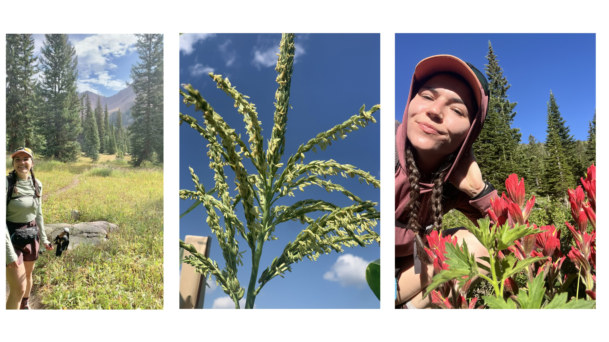

I am a computational biologist at the HudsonAlpha Institute for Biotechnology’s Genome Sequencing Center. Our group develops and analyzes pangenomic resources to characterize agronomically and ecologically important diversity, in many different plant species. My research generally centers on detecting the genetic mechanisms by which native plant ecotypes adapt to local environments. These insights can support crop improvement for climate resilience and inform conservation efforts.
In 2024, I received my PhD in Plant Biology from Penn State University where I was co-advised by Jesse Lasky and Ruairidh Sawers. My doctoral research used a combination of genomic, phenotypic, physiological, and environmental data to better understand local adaptation in cereal crop landraces (native, local varieities - mainly sorghum and maize). My B.S. is in Botany with a minor in Wildlife Ecology and Conservation from the University of Florida. At UF, I worked with Dave Clark and developed sweet basil hybrids with downy mildew resistance.
Outside of science, I enjoy hiking, skiing, botanizing, reading, and crafting.
